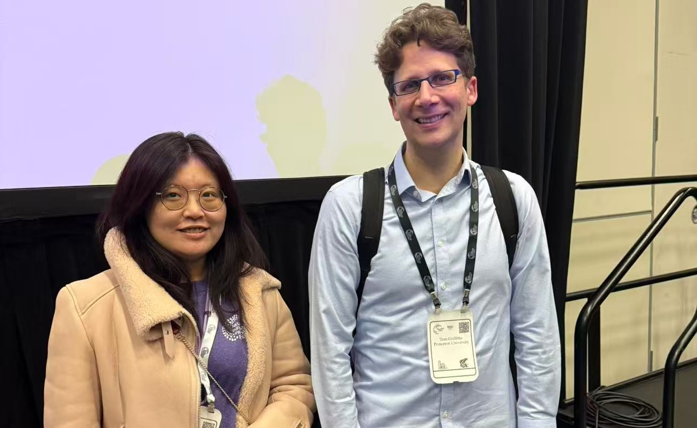
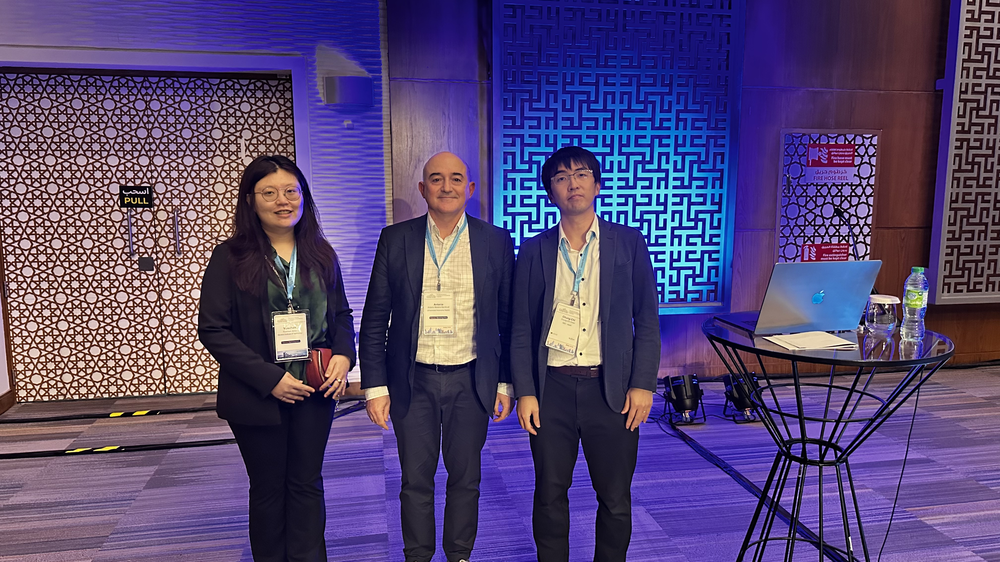

07/2026
Invited Webinar Speaker
The Alan Turing Institute — Media in the AI Era
July 2, 2026, 15:00 UK time
July 2, 2026, 15:00 UK time
Ethics Reviewer
Conference Reviewer
Reviewer, May 2026
Reviewer, March 2026
Reviewer, January 2026
MisD 2026
MisD 2026
Reviewer, October 2025
Main and Database and Benchmark Track
Dataset and Benchmarks Track Reviewer
SCI-FM Workshop Reviewer
DeLTa Workshop Reviewer
The Joint Workshop of the 9th Financial Technology and Natural Language Processing (FinNLP), the 6th Financial Narrative Processing (FNP), and the 1st Workshop on Large Language Models for Finance and Legal (LLMFinLegal)
FinNLP-FNP-LLMFinLegal @ COLING 2025
The Thirty-Eighth Annual Conference on Neural Information Processing Systems
FinLLM Task 3: Single Stock Trading; Joint Workshop of FinNLP and AgentScen @ IJCAI 2024
Ethics Reviewer
Workshop Reviewer
FM-Wild Workshop Reviewer
LLM Agents Workshop Reviewer



